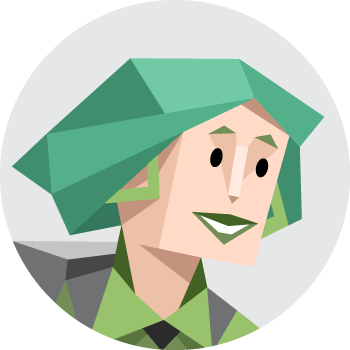

🎭 personality

ENFP-A
The Campaigner
🎓 education
-
At a local specialised college. Studied applied design, which quickly turned into a career.
-
Local high school doing honors level course work. Highly motivated, a high achiever. Participated in a few academic clubs.
💼 work life
- Employed
- Freelances
Mid level position, managing a small team (2-3) of juniors.
💃🏻 hobbies
- Coffee
- Travelling
- Tennis
- Cooking
- Art & Architecture
📱 digital communities
💻 digital media
Currently uses online tutorials and/or discussion boards to learn digital media. Sometimes signs up for digital conferences to experience the community more, but may not fully participate. Talks primarily to professors for any advice related to field. Googles the rest.
🎯 goals
- Meet like-minded people
- Get help / level-up skills
- Step out of current profession
😈 frustrations
- Lacks network in Digital Media
- Too many tools (Fb groups, slacks etc)